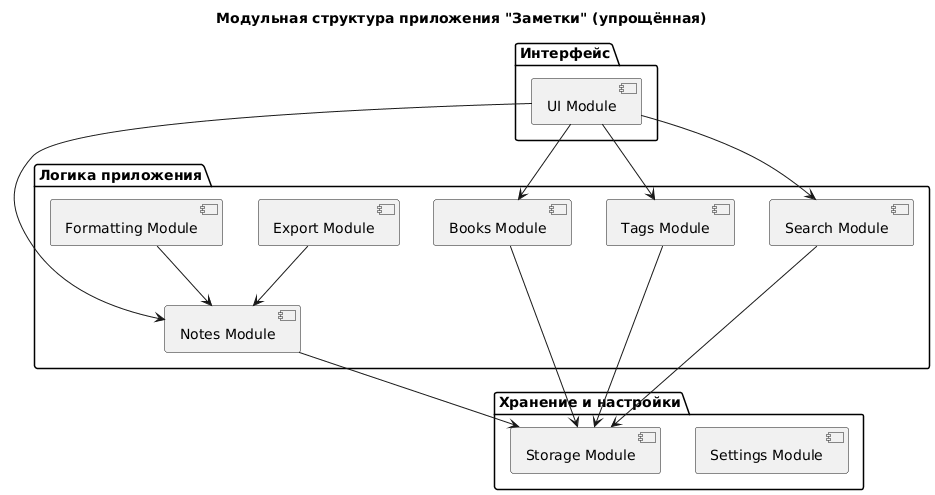

О проекте
«Заметки» — это простое и удобное приложение для создания, хранения и структурирования текстовой информации. С его помощью можно:
- Вести личные записи и учебные конспекты
- Создавать книги, объединяя заметки по темам
- Назначать ярлыки для удобной фильтрации
- Быстро находить нужные заметки и книги
- Экспортировать данные в PDF
Модули приложения

- Пользовательский интерфейс: навигация, редактор текста, панель инструментов.
- Управление заметками: создание, редактирование, удаление и закрепление заметок.
- Управление книгами: объединение заметок в сборники, изменение порядка.
- Ярлыки: создание меток, фильтрация по категориям.
- Поиск: полнотекстовый поиск по содержимому и названиям.
- Форматирование: заголовки, списки, вставка изображений и ссылок.
- Экспорт в PDF: сохранение заметок и книг с форматированием.
- Импорт данных: загрузка заметок из файлов.
- Хранение данных: сохранение, резервное копирование и восстановление.
- Настройки проекта: тема интерфейса, язык, управление хранилищем.
Сценарии использования
Создание заметки
- Нажмите кнопку «Создать»
- Введите текст заметки
- Назначьте ярлык для фильтрации
- Сохраните заметку
Создание книги
- Перейдите в раздел «Книги»
- Нажмите «Создать книгу»
- Добавьте заметки в книгу
- Измените порядок заметок, если нужно
Экспорт в PDF
- Откройте заметку или книгу
- Выберите «Экспорт в PDF»
- Укажите путь сохранения
Преимущества приложения
- Простота и легкость в использовании
- Модульная архитектура, легко расширять функционал
- Удобное хранение и структурирование заметок
- Быстрый поиск по ключевым словам и ярлыкам
- Возможность резервного копирования и восстановления данных